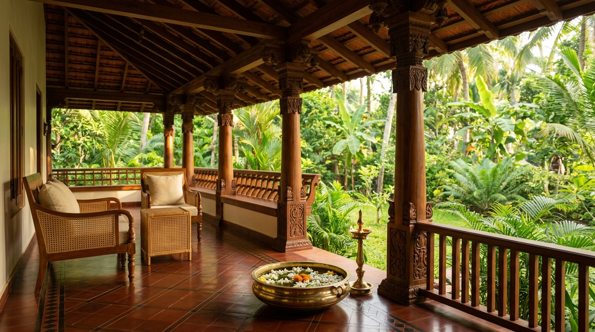

"29-ാം വയസ്സിൽ വിവാഹമല്ല, സ്വന്തം സംരംഭം..."
At an age when societal expectations often emphasize traditional paths, Niveda Babu chose to build something of lasting community significance. Having witnessed firsthand how empty large ancestral homes in Palakkad and Thrissur had become—with children achieving dreams in the UAE, Qatar, the UK, and North America—she identified that loneliness was Kerala's greatest unaddressed epidemic.
While clinical nursing services existed for bedridden patients, there was zero institutional support for vibrant, mobile seniors who simply desired someone to talk to, share their morning tea with, and walk alongside to the temple or market.
The Meaning of 'Arikil'
In Malayalam, "അരികിൽ" means to be right beside you. Not towering above, not directing from a distance, but walking gently hand-in-hand.
Dignified Respect
We never treat elders as helpless. They are accomplished teachers, engineers, homemakers, and grandparents. We honor their wisdom and agency in every interaction.
Presence Over Distance
Physical presence matters. A video screen can never replace someone walking beside you on the road or pouring tea while listening to your thoughts.
Home-Centric Comfort
Our care unfolds entirely in their own ancestral house, allowing seniors to sleep in their own beds, tend their courtyard gardens, and retain lifelong routines.
Grounded in Character, Safety & Reverence
Inviting someone into your family home requires absolute peace of mind. Every companion is personally vetted by our founder before stepping into any household.
Identity & Police Clearance
Every companion undergoes government ID validation, residential verification, and police character clearance.
Empathy & Cultural Reverence
We screen for patient listening, gentle voice, and genuine warmth toward elders in Palakkad and Thrissur.
Direct Founder Oversight
Founder Niveda Babu directly oversees each companion allocation and maintains personal quality check-ins with families.
Join Arikil as a Companion
"മുതിർന്നവരോടൊപ്പം സമയം ചെലവഴിക്കാനും അവരെ സപ്പോർട്ട് ചെയ്യാനും ആഗ്രഹിക്കുന്നവർക്ക് പാർട്ട് ടൈം തൊഴിലവസരങ്ങൾ"
Are you a compassionate college student, graduate, homemaker, or early retiree in Palakkad or Thrissur who loves spending quality time with elders? Join our dignified companion fellowship.
Companion Fellowship Application
The Arikil Promise to Families
We pledge to honor your parents as our own: with gentle patience, total transparency, punctuality, and unwavering warmth every single day.